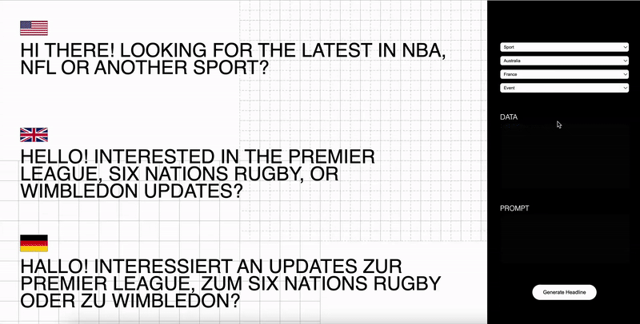
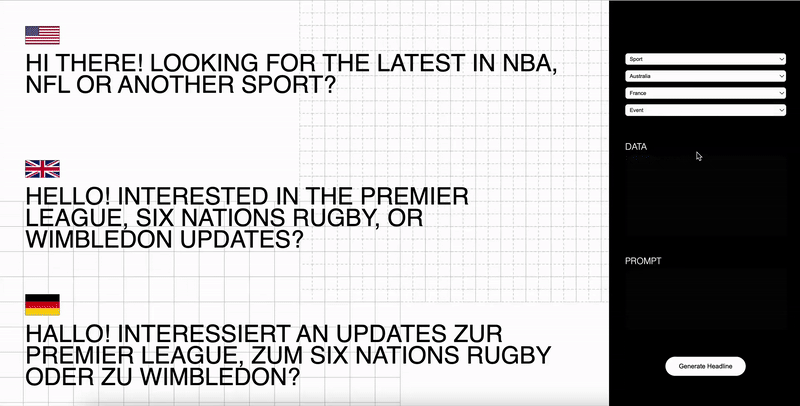

Casper Wortmann works at the intersection of artificial intelligence, interaction, and computation.
Based in Amsterdam, he combines a Master's degree in artificial intelligence with a background in
performance art.
His work ranges from experimental installations to production-level machine learning
systems, often blurring the line between technical infrastructure and lived experience.


 
